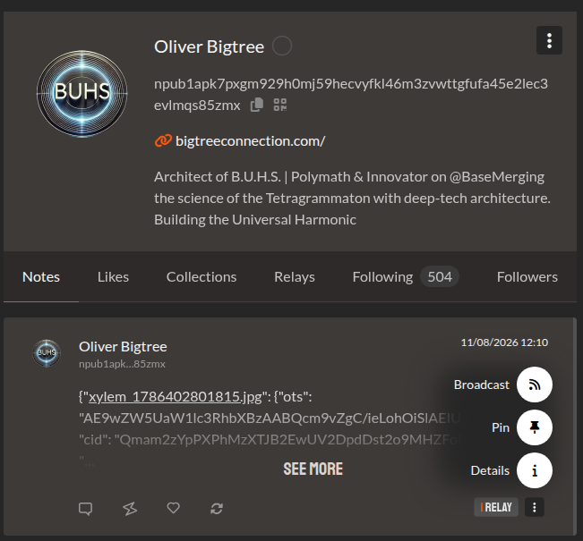
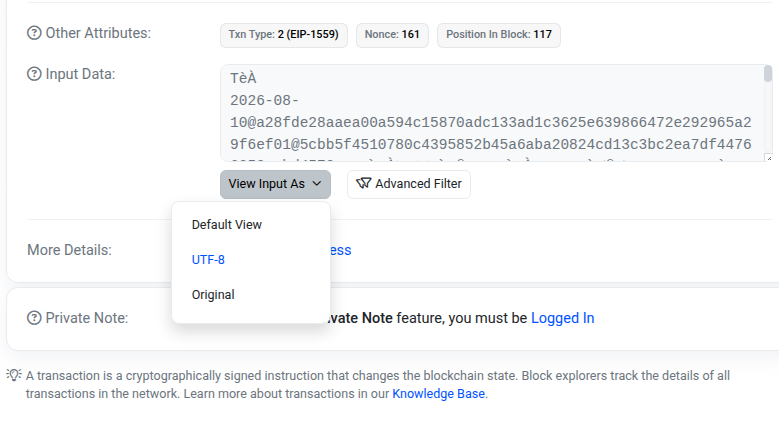

Veuillez choisir le composant du registre à auditer :
1. Rendez-vous sur la page du jour que vous souhaitez auditer sur le journal Xylem Log :
> Chercher la page sur l'index > CAPTURE 01: Journal OTS vers Nostr
> CAPTURE 01: Journal OTS vers Nostr
2. Ouvrez le lien de l'image correspondante à l'heure désirée sur le réseau IPFS (accessible directement depuis le lien "open" de la page HTML).
3. Enregistrez l'image localement sur votre machine sans la modifier (accédez au dépôt miroir si l'accès IPFS est lent).
4. Repérez et copiez-collez dans votre presse-papier le nom du fichier OTS correspondant (Open Time Stamped) que vous désirez vérifier.
image : xylem_1785196801399.jpg
proof : xylem_1785196801399.jpg.ots
Allez sur le réseau Nostr et récupérez le numéro de parution "Event ID" du jour souhaité (J+1) contenant les 24 fichiers OTS cryptés (et les liens IPFS des images correspondantes) : (astuce : copiez directement l'Event_ID sur Coracle ou un autre relay Nostr, ou copiez l'ensemble JSON de la publication dans le décodeur)
> CHERCHER JOUR +1
> CAPTURE 02: Parution du 11 août pour auditer la journée du 10 août 2026 sur Coracle (cliquez sur les 3 petits points 'détails' puis pensez à décocher 'raw version')Saisissez ou collez l'Event ID Nostr (hex 64 caractères) pour récupérer les 24 OTS ou le Event JSON dans le decodeur ci-dessous:
Collez ici le texte brut de la publication Nostr pour extraire directement la preuve .ots binaire :
Consulter directement l'événement source sur un explorateur de relais Nostr (Jumble, Coracle, Fevela, YakiHonne) tout en VÉRIFIANT BIEN LA DATE J+1 :
> Inspecter la note Nostr (Nostr.band)Rendez-vous sur l'outil de vérification indépendant OpenTimestamps :
> Accéder au vérificateur OpenTimestamps.orgGlissez-déposez conjointement l'image (.jpg) et sa preuve horodatée (.ots) pour valider l'ancrage temporel exact dans la blockchain Bitcoin.
 > CAPTURE 03: Vue de l'interface OpenTimestamps
> CAPTURE 03: Vue de l'interface OpenTimestamps
Le smart contract officiel Xylem Log enregistre un ancrage automatique quotidien scellant le Root Hash et le CID de la journée.
Accédez directement au registre public des transactions sur Basescan :
> Consulter le Smart Contract sur BasescanSélectionnez la transaction correspondant à la date de votre audit et cliquez sur son Transaction Hash (TxHash) pour ouvrir la fiche de détail.

> CAPTURE 04: Consultation des transactions du Smart Contract sur Basescan L2Une fois sur la page de détails de la transaction :
1. Descendez en bas de la page et cliquez sur le lien/bouton : Click to show more.
2. Localisez la section Input Data.
3. Dans le sélecteur d'affichage de l'Input Data (par défaut souvent positionné sur Hex), sélectionnez : View Input As UTF-8.
Ex: "Xylem Log 2026-08-10 Root Hash: 0x... IPFS CID: Qm..."
4. Audit final : Comparez l'empreinte (Root Hash / CID) affichée dans cet Input Data UTF-8 avec celle publiée sur le journal Xylem Log [ÉTAPE 1] du jour correspondant. L'exactitude stricte entre les deux valeurs confirme la validité et l'intégrité de l'ancrage blockchain.